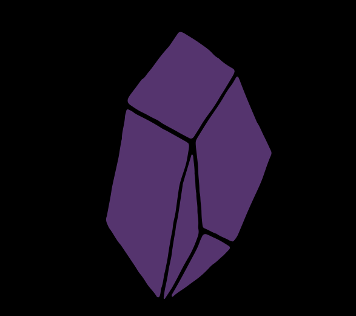

<!doctype html>
<html lang="en">
<meta charset="utf-8">
<meta name="viewport" content="width=device-width, initial-scale=1">
<meta http-equiv="Content-Security-Policy" content="default-src 'none'; img-src 'self'; style-src 'unsafe-inline'; form-action https://www.bing.com; base-uri 'none'">
<meta name="referrer" content="no-referrer">
<title>New tab</title>
<style>
  * { box-sizing: border-box; }
  body { margin: 0; background: #100e17; color: #eee9f5; font: 18px system-ui, sans-serif; }
  main { max-width: 760px; margin: 12vh auto; padding: 32px; text-align: center; }
  img { width: 100px; height: 100px; object-fit: contain; }
  h1 { font-size: 46px; letter-spacing: -2px; margin: 20px 0 8px; }
  p { color: #b8afc8; line-height: 1.6; }
  form { display: flex; gap: 12px; margin: 36px 0 16px; }
  input { min-width: 0; flex: 1; border: 1px solid #665378; border-radius: 14px; padding: 18px; background: #201b2b; color: white; font: inherit; }
  button { background: #ceb0ee; color: #21122f; border: 0; border-radius: 14px; padding: 18px 24px; font: inherit; cursor: pointer; }
  input:focus-visible, button:focus-visible { outline: 3px solid #d7bdff; outline-offset: 4px; }
  small { display: block; color: #aaa0b9; line-height: 1.7; }
  footer { margin-top: 64px; font-size: 14px; color: #aaa0b9; }
  @media (max-width: 480px) { form { flex-direction: column; } h1 { font-size: 38px; } }
</style>
<main>
  
  <h1>Obsidian</h1>
  <form action="https://www.bing.com/search" method="get" autocomplete="off">
    <input type="search" name="q" placeholder="Search with Bing" aria-label="Search with Bing" required>
    <button type="submit">Search</button>
  </form>
  <small>Searches go to Microsoft when you submit.<br>No remote suggestions or external resources on this start page.</small>
  <footer><kbd>Ctrl+L</kbd> Address bar &nbsp; · &nbsp; <kbd>Ctrl+T</kbd> New tab &nbsp; · &nbsp; <kbd>Ctrl+D</kbd> Bookmark<br>Obsidian development preview</footer>
</main>
</html>
